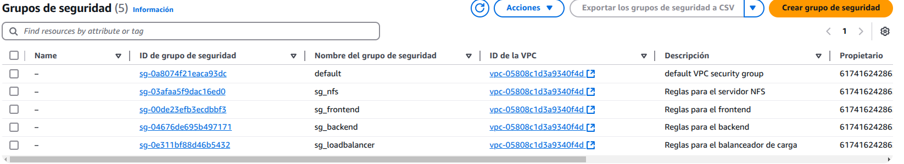

Practica-IAW-4.5: Terraform en AWS
En esta práctica, crearemos nuestra Infraestructura creada en la práctica 1.11 con terraform en AWS, de forma que sea totalmente automatizada, englobando la creación de instancias, grupos de seguridad así cómo IPs elásticas, posteriormente, procederemos a su eliminación.
Creación de Nuestra InfraEstructura
provider "aws" {
region = var.region
}
# Creamos el grupo de seguridad del frontend
resource "aws_security_group" "frontend" {
name = var.SECURITY_GROUP_FRONTEND
description = "Reglas para el frontend"
}
# Creamos las reglas para el grupo de seguridad "frontend-sg"
resource "aws_security_group_rule" "frontend_ingress" {
count = 5
security_group_id = aws_security_group.frontend.id
type = "ingress"
from_port = [22, 2049, 80, 443, 3306][count.index]
to_port = [22, 2049, 80, 443, 3306][count.index]
protocol = "tcp"
cidr_blocks = ["0.0.0.0/0"]
}
# Creamos el grupo de seguridad del backend
resource "aws_security_group" "backend" {
name = var.SECURITY_GROUP_BACKEND
description = "Reglas para el backend"
}
# Creamos las reglas para el grupo de seguridad "backend-sg"
resource "aws_security_group_rule" "backend_ingress" {
count = 2
security_group_id = aws_security_group.backend.id
type = "ingress"
from_port = [22, 3306][count.index]
to_port = [22, 3306][count.index]
protocol = "tcp"
cidr_blocks = ["0.0.0.0/0"]
}
# Creamos el grupo de seguridad del balanceador de carga
resource "aws_security_group" "loadbalancer" {
name = var.SECURITY_GROUP_LOADBALANCER
description = "Reglas para el balanceador de carga"
}
# Creamos las reglas de entrada para el grupo de seguridad "loadbalancer-sg"
resource "aws_security_group_rule" "loadbalancer_ingress" {
count = 5
security_group_id = aws_security_group.loadbalancer.id
type = "ingress"
from_port = [22, 3306, 80, 443, 2049][count.index]
to_port = [22, 3306, 80, 443, 2049][count.index]
protocol = "tcp"
cidr_blocks = ["0.0.0.0/0"]
}
# Creamos el grupo de seguridad para el nfs server
resource "aws_security_group" "nfs" {
name = var.SECURITY_GROUP_NFS
description = "Reglas para el servidor NFS"
}
# Creamos las reglas de entrada para el grupo de seguridad "nfs-sg"
resource "aws_security_group_rule" "nfs_ingress" {
count = 2
security_group_id = aws_security_group.nfs.id
type = "ingress"
from_port = [22, 2049][count.index]
to_port = [22, 2049][count.index]
protocol = "tcp"
cidr_blocks = ["0.0.0.0/0"]
}
# Creamos las instancias EC2 para los frontend 1 y frontend 2
resource "aws_instance" "frontend" {
count = 2
ami = var.ami_id
instance_type = var.instance_type
key_name = var.key_name
security_groups = [aws_security_group.frontend.name]
tags = {
Name = "frontend-${count.index + 1}"
}
}
# Creamos una instancia para el backend
resource "aws_instance" "backend" {
ami = var.ami_id
instance_type = var.instance_type
key_name = var.key_name
security_groups = [aws_security_group.backend.name]
tags = {
Name = "backend"
}
}
# Creamos una instancia para el balanceador de carga
resource "aws_instance" "loadbalancer" {
ami = var.ami_id
instance_type = var.instance_type
key_name = var.key_name
security_groups = [aws_security_group.loadbalancer.name]
tags = {
Name = "loadbalancer"
}
}
# Creamos una instancia para el NFS Server
resource "aws_instance" "nfs" {
ami = var.ami_id
instance_type = var.instance_type
key_name = var.key_name
security_groups = [aws_security_group.nfs.name]
tags = {
Name = "nfs"
}
}
# Asociamos dos IPs elásticas a las máquinas frontend 1 y 2
resource "aws_eip" "frontend" {
count = 2
instance = aws_instance.frontend[count.index].id
}
# Asociamos la IP elástica a la instancia backend
resource "aws_eip" "backend" {
instance = aws_instance.backend.id
}
# Asociamos la IP elástica a la instancia loadbalancer
resource "aws_eip" "loadbalancer" {
instance = aws_instance.loadbalancer.id
}
# Asignamos la IP elástica a la instancia NFS Server
resource "aws_eip" "nfs" {
instance = aws_instance.nfs.id
}
Archivo de variables
En este archivo, definiremos los valores de las variables del script de automatización
variable "region" {
description = "Región de AWS donde creamos la instancia"
type = string
default = "us-east-1"
}
variable "allowed_ingress_ports" {
description = "Puertos de entrada del grupo de seguridad"
type = list(number)
default = [22, 80, 443]
}
variable "ami_id" {
description = "Identificador de la AMI"
type = string
default = "ami-00874d747dde814fa"
}
variable "instance_type" {
description = "Tipo de instancia"
type = string
default = "t2.small"
}
variable "key_name" {
description = "Nombre de la clave pública"
type = string
default = "vockey"
}
variable "SECURITY_GROUP_FRONTEND" {
description = "Nombre del grupo de seguridad para el frontend"
type = string
default = "sg_frontend"
}
variable "SECURITY_GROUP_BACKEND" {
description = "Nombre del grupo de seguridad para el backend"
type = string
default = "sg_backend"
}
variable "SECURITY_GROUP_LOADBALANCER" {
description = "Nombre del grupo de seguridad para el balanceador de carga"
type = string
default = "sg_loadbalancer"
}
variable "SECURITY_GROUP_NFS" {
description = "Nombre del grupo de seguridad para el servidor NFS"
type = string
default = "sg_nfs"
}
Archivo de salida
Este archivo servirá para definir y mostrar los valores de salida desopués de que la InfraEstructura se haya creado.
# Mostramos las IPs elásticas de las instancias frontend
output "frontend_elastic_ips" {
value = [for i in aws_eip.frontend : i.public_ip]
}
# Mostramos la IP elástica del backend
output "backend_elastic_ip" {
value = aws_eip.backend.public_ip
}
# Mostramos la IP elástica del loadbalancer
output "loadbalancer_elastic_ip" {
value = aws_eip.loadbalancer.public_ip
}
# Mostramos la IP elástica del NFS_Server
output "nfs_elastic_ip" {
value = aws_eip.nfs.public_ip
}
Prueba de Funcionamiento
Tras documentar los comandos de creación, vamos a la prueba de la ejecución.
Nota: Al ser una salida larga, mostraremos captura del principio y del final de la ejecución.


Ahora, nos dirigimos al panel de AWS y comprobamos que se han creado los recursos de forma correcta.



Tras comprobar que se han creado correctamente las máquinas y demás, procederemos a su borrado. Para proceder con su borrado, lo realizaremos con el comando:
terraform destroy -auto-approve
Este comando es el comando de borrado genérico de Terraform, dónde con la opción "-auto-approve", le indicamos que todos los mensajes de confirmación, sean aceptados automáticamente.
Explicado el comando, procedemos a su ejecución.

Prueba de Funcionamiento
Para comprobar de que las instancias se han borrado eficazmente, IPs elásticas y grupos de seguridad, nos dirigimos al panel de AWS:

Procedemos a comprobar la elimninación de las IPs elásticas así cómo grupos de seguridad.

Y por último, comprobamos el borrado efectivo de los grupos de seguridad.